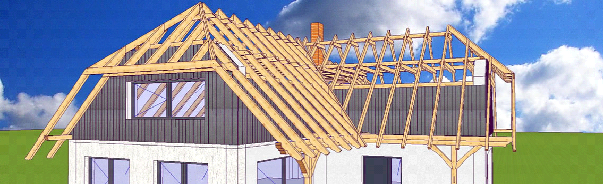
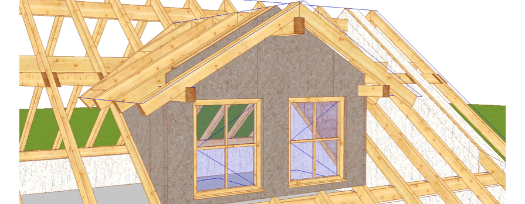
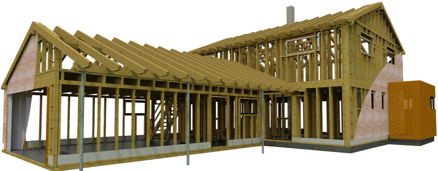

Venta programok
A Venta Software egy három dimenziós programcsomag, mely hagyományos tetőszerkezethez, falszerkezethez, valamint szabadon álló faszerkezet tervezéséhez és gyártmányrajz készítéshez nyújt segítséget ácsoknak és készházépítőknek!
Felejtse el a zsinórpad állítását és spóroljon meg rengeteg időt! A megtervezett tetőszerkezetet már a munka megkezdése előtt leszabhatja a műhelyben, vagy a helyszínen! A Venta Software három különböző programot kínál az ácsoktól egészen a készházépítő cégekig!
  